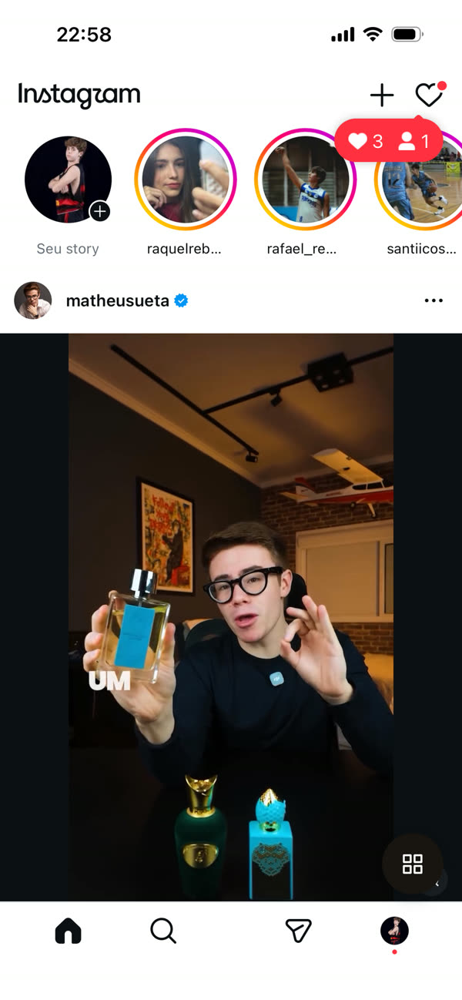
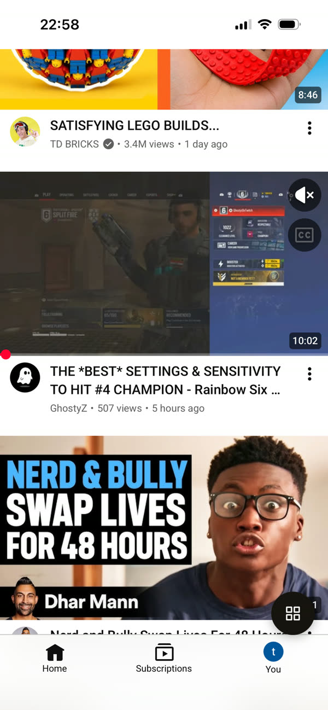
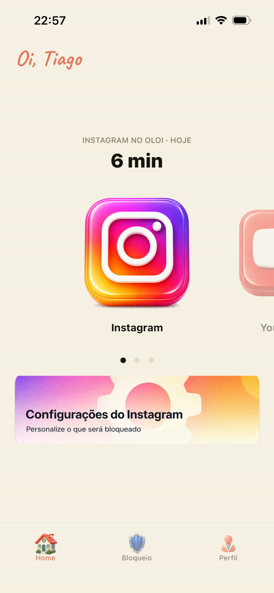
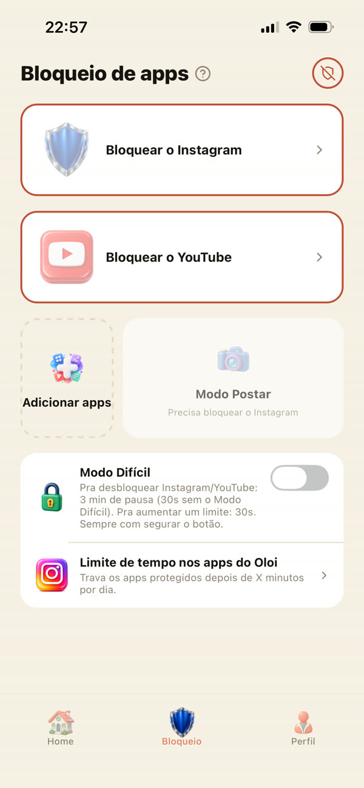

1
Você tranca o app de verdade
O Oloi usa o Tempo de Uso da própria Apple. Você escolhe o Instagram e o YouTube uma vez, e o bloqueio fica no sistema, não depende de força de vontade.
Já na App Store
Suas conversas, seus amigos e os Stories continuam. O feed infinito fica de fora, e o tempo que ele comia volta pra você.

SEM REELS
SEM SHORTS
SEU TEMPO HOJE
TRANCADO DE VERDADEA conta que ninguém faz
Arraste até o seu tempo médio por dia em Reels, Shorts e TikTok. A conta é a mesma que o Oloi mostra no primeiro minuto de uso.
Sem cor. Sem som. Sem você.O Oloi devolve isso pra você.
Como funciona
O Oloi usa o Tempo de Uso da própria Apple. Você escolhe o Instagram e o YouTube uma vez, e o bloqueio fica no sistema, não depende de força de vontade.
Abriu o Instagram sem pensar? Aparece o escudo do Oloi com um toque pra ir pra versão sem Reels. O hábito vira uma escolha.
Feed, Stories, mensagens e perfis. A aba Reels e a aba Shorts somem, e o reel que um amigo mandou toca uma vez: rolar pro próximo te devolve pra conversa.
O que tem dentro
Quem fez
Quem fez o Oloi perdia horas por dia no feed. A construção inteira, do primeiro código à App Store, está nos vídeos da conta de founder.
Pra pais
Ele continua falando com os amigos. Você decide o resto, e só você destrava.
Escolhe "Meu filho ou filha" na primeira tela e cria um PIN.
Desligar um filtro, destravar o Instagram ou liberar o Modo Postar. Apertar a proteção é livre.
Com o iPhone dele na sua Família do iCloud, o Oloi não sai do aparelho sem a sua aprovação.
Não. Você entra no site oficial do Instagram, aberto dentro do Oloi. A senha vai direto pro Instagram, e o Oloi não guarda nada da sua conta.
O Modo Postar libera o Instagram de verdade por 5 a 10 minutos, até 3 vezes por dia. Depois ele tranca sozinho.
Baixar é grátis.
O mínimo pra sua conta funcionar. Os detalhes estão na política de privacidade, e você apaga a conta quando quiser.